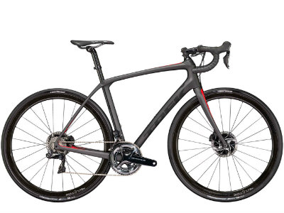
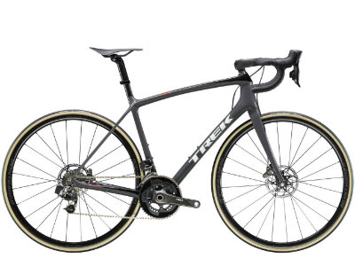
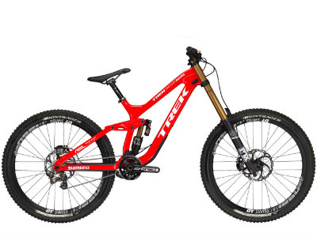

Domane SLR 9 Disc
$11,999
Domane SLR 9 Disc makes no compromises. It's our top-of-the-line endurance road bike, and it's equipped with the best parts money can buy. A full Shimano Dura-Ace Di2 electronic drivetrain, Aeolus 3 D3 Disc carbon wheels, and Front and Adjustable Rear IsoSpeed make it a bike that's up for anything, from racing to epic solo days on rough roads.
Émonda SLR 9 Disc
$10,999
Émonda SLR 9 Disc leaves no box unchecked in the performance category. This carbon disc road bike is built with top-of-the-line everything, including our lightest road disc frame ever, Bontrager Aeolus XXX carbon wheels, a carbon bar/stem combo, and a full Shimano Dura-Ace Di2 drivetrain.
Session 9.9 DH 27.5
$7,999
Session 9.9 is the pinnacle of downhill mountain bike performance. It's built for one reason: going as fast as freakin' possible down hills. It pairs proven Shimano Saint parts with our premium OCLV Mountain Carbon frame and FOX Factory suspension. This is the same DH bike the pros ride, and the bike of choice for World Champion Rachel Atherton.